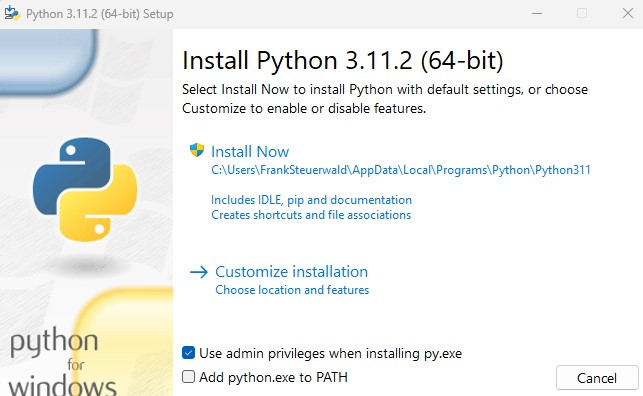

Ziele der Übung
- Übungsgruppe in Moodle beitreten
- GitHub-Account anlegen & Gruppen-Repository beitreten
- Databricks-Workspace einrichten & Access Token generieren
- Entwicklungsumgebung aufsetzen (lokal oder Codespaces)
dbt builderfolgreich ausführen
Gruppenbildung
Moodle & Vorkenntnisse
Beitritt zu einer Übungsgruppe
Suchen Sie sich einen oder zwei Übungspartner und treten Sie gemeinsam einer der leeren Gruppen (BIS2420X) in Moodle bei:
Vorkenntnisse
In Übung und Vorlesung nutzen wir folgende Sprachen & Tools:
SQL
Python
Power BI
dbt
GitHub
Versionskontrolle einrichten
GitHub-Account anlegen
Wir nutzen Git als Quellcodeverwaltungssystem. Mindestens ein Gruppenmitglied benötigt einen GitHub-Account.
Sie können einen vorhandenen privaten Account nutzen oder einen neuen mit Ihrer HSH-Mailadresse anlegen:
Zugriff auf Gruppen-Repository beantragen
Öffnet ein GitHub-Issue nach Vorlage, um Zugriff auf das Repository eurer Gruppe zu erhalten:
Tragt eure HSH-E-Mail-Adresse und eure Gruppennummer ein und sendet das Issue ab. Euer GitHub-Benutzername wird automatisch anhand eures eingeloggten Accounts erkannt.
Automatische Freischaltung
Eine GitHub Action prüft eure Angaben automatisch und:
- fügt euch dem GitHub-Team eurer Gruppe hinzu (max. 3 Mitglieder)
- kommentiert das Issue mit einem Link zu eurem Repository
- schließt das Issue automatisch
Ihr erhaltet daraufhin eine Einladung zur Organisation hsh-bis242 und Zugriff auf euer Gruppen-Repository, z. B.:
https://github.com/hsh-bis242/bis-242-ws26-gruppe02Databricks Workspace
Cloud-Datenbank einrichten
Zugriff auf Databricks
Die Anmeldung erfolgt über Ihre Hochschul-Mail-Adresse.
Access Token generieren
- Oben rechts auf das User Profil klicken
- Settings → Developer → Access Token → Manage → Generate new Token
- Lifetime auf 180 Tage setzen und Token kopieren
Variante A: GitHub Codespaces
Cloud-IDE im Browser
Codespace starten
- Das Gruppen-Repository (
bis-242-ws26-gruppeXX) auf GitHub öffnen - Code → Codespaces → Create codespace on main
- GitHub startet eine VS-Code-Umgebung im Browser (Python vorinstalliert)
Token als Codespace Secret hinterlegen
export gesetzter Token geht bei jedem Neustart des Codespace verloren.
- GitHub → Settings → Codespaces → Secrets → New secret
- Name:
DATABRICKS_TOKEN, Value: Ihr Token - Repository access: das Gruppen-Repository über die Suche (Name
bis-242-ws26-gruppeXXeintippen) auswählen – es wird in der Liste nicht immer direkt angezeigt - Codespace neu starten bzw. neu erstellen, damit das Secret verfügbar ist
Abhängigkeiten & venv
Im Codespace-Terminal ausführen:
python -m venv .venv
source .venv/bin/activate
pip install -r requirements.txt
.venv) muss in jedem neuen Terminal
aktiviert sein ((.venv) vor dem Prompt). Sonst funktionieren die dbt-Befehle nicht – auch in allen weiteren Übungen.
Variante B: Lokales Setup
Python · VS Code · Git Clone
Installation Python
Python (python.org) installieren, wenn nicht bereits vorhanden.
Im Installer "Customize installation" wählen und pip aktivieren.

pip nachinstallieren (falls nötig)
Falls Python bereits ohne pip installiert ist:
py -m ensurepip --upgradeInstallation Visual Studio Code
Wir empfehlen Visual Studio Code als IDE. Es kann aber auch jeder andere Texteditor verwendet werden.
Repository klonen (1/2)
Öffnen Sie Ihr Gruppen-Repository auf GitHub:
https://github.com/hsh-bis242/bis-242-ws26-gruppeXXKopieren Sie die Clone-URL:

Repository klonen (2/2)
- In VS Code: Clone Git Repository auf der Willkommensseite
- Clone-URL einfügen und bestätigen
- Speicherort wählen (z. B.
~/dev/) - Bei Authentifizierung: "Sign in with your browser"

Python venv erstellen
- Python Extension in VS Code installieren
- View → Command Palette → "Python: Create Environment…"
- Venv als Environment Type wählen
- Dependencies aus
requirements.txtinstallieren
Databricks Token setzen
Öffnen Sie ein Terminal in VS Code (View → Terminal):
🪟 Windows (PowerShell)
[Environment]::SetEnvironmentVariable(
"DATABRICKS_TOKEN",
"---> TOKEN <---", "User")
🍎 macOS / Linux
echo 'export DATABRICKS_TOKEN="---> TOKEN <---"' \
>> ~/.zshrc
source ~/.zshrc
Anschließend VS Code neu starten.
Virtuelle Umgebung aktivieren
VS Code aktiviert die venv normalerweise automatisch. Falls nicht:
🪟 Windows (PowerShell)
.\.venv\Scripts\Activate.ps1🍎 macOS / Linux
source .venv/bin/activatedbt build
Projekt erstmalig bauen
Ausführen von dbt
Hinweis: Stellen Sie sicher, dass die virtuelle Umgebung aktiviert ist.
cd willibald_dwh
dbt deps
dbt build
7
Seeds
6
PSA-Views
19
DV-Modelle